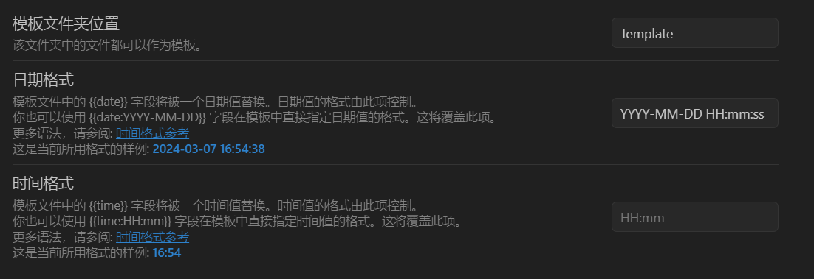
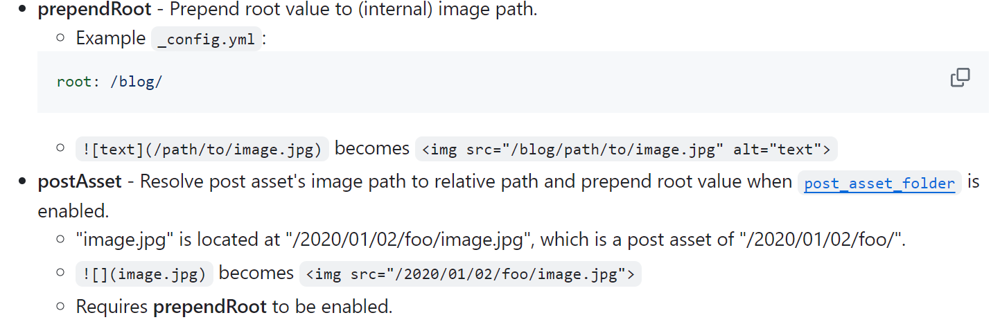

参考：Obsidian+Git 完美维护 Hexo 博客 - 知乎
# 模板
用 hexo 命令创建会自带文档属性，用 obisidian 就是空白文档，但可以写个模板，直接插入，也不费多少事，免得还要去根目录开 bash。
创建一个模板文件夹如 Template，创建模板文件：
编辑源码模式下，输入以下。title 就是文章名，date 在 obisidian 设置中自定义的日期
--- | |
title: 在obisidian上使用 | |
date: 1709801087000 | |
categories: | |
tags: | |
--- |

# 目录维护
Hexo + Obsidian + Git 完美的博客部署与编辑方案 - 掘金
【Hexo 插件系列】日志的自动分类插件 hexo-auto-category | ESON
使用 hexo-auto-category 根据文件目录自动生成 categories 信息。
对于博客 source/_post/web/framework/hexo.md ，该插件会自动生成以下 categories
categories: | |
- web | |
- framework |
安装： npm install hexo-auto-category --save
在 _config.yml 中添加
# Generate categories from directory-tree | |
# Dependencies: https://github.com/xu-song/hexo-auto-category | |
# depth: the depth of directory-tree you want to generate, should > 0 | |
auto_category: | |
enable: true | |
depth: |
如果只想生成第一级目录分类，可以设置 depth 属性为 1，以此内推。
# 图片
# 如何让 Obsidian 的图片存储形式设置为 ./${filename}.assets
头大的是这个，在上一篇文章中已经用了插件，相比自己手动更改 html 中的路径方便，但平时截图命名是用时间，待数字，其次 obsidian 默认存放位置固定，还需要手动移动文件和写引用。
# 位置
- 关闭
使用 Wiki 链接 - 使用插件 Custom Attachment Location（里面还有自动为粘贴的图像重命名的功能）
- 在↑设置中的 Location xx：./$
- 设置 “文件与链接” 中附件选 “当前文件所在文件夹的子文件夹”，然后留空（由上面的插件自动填入了）
- 设置 “文件与链接” 中内部链接类型选 “尽可能短的方式”
Q：好像不支持中文，那就跟目录维护的冲突了，无法起中文名文件夹。不用 CATEGORIES，自行管理 categories？
A：但好像可以
# 路径
改用npm install hexo-renderer-marked --save
可行，且极好用
见：hexo-renderer-marked，有丰富的扩展选项
_config 设置这两个。
marked: | |
prependRoot: true | |
postAsset: true |

# 文内链接
见 网站样式 的站内跳转